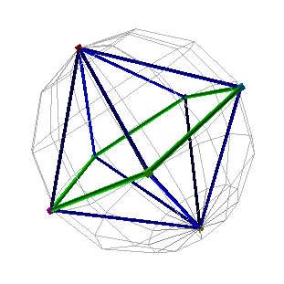
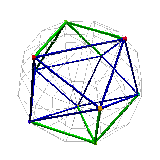
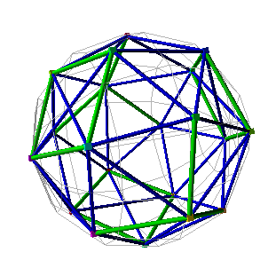

シミュレーションの結果、生成された立体
クリックで３次元アニメーション表示されます。（要Chrome26）
クリックで３次元アニメーション表示されます。（要Chrome26）
| N=4 |  | 正四面体 Tetrahedron |
| N=5 |  | 双三角錐 Bipyramid(3) |
| N=6 |  | 正八面体 Octahedron |
| N=7 |  | 双五角錐 Pentagonal Bipyramid |
| N=8 |  | 四反角柱 Antiprism(4) |
| N=9 |  | 三側錐三角柱 Triaugmented Triangular Prism |
| N=10 |  | Antiprisim(4) + 2 Pyramids |
| N=11 |  | |
| N=12 |  | 正二十面体 Icosahedron |
| N=20 |  | |
| N=24 |  | 変形立方体 Snub Cube |
| N=32 |  | 爆縮レンズ Explosive lens |